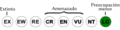
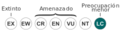

Archivo:Status iucn3.1 LC es.svg
De WikiEVA

Tamaño de esta previsualización: 200 × 50 píxeles. Otra resolución: 320 × 80 píxeles.
{kind=link}
{kind=link}
Archivo original (archivo SVG, nominalmente 200 × 50 píxeles, tamaño de archivo: 27 KB)
Historial del archivo
Haz clic sobre una fecha/hora para ver el archivo a esa fecha.
| Fecha y hora | Miniatura | Dimensiones | Usuario | Comentario | |
|---|---|---|---|---|---|
| actual | 01:15 19 oct 2012 |  | 200 × 50 (27 KB) | Marco Gaiani (Discusión | contribuciones) | |
| 18:02 26 jun 2012 |  | 240 × 64 (20 KB) | Marco Gaiani (Discusión | contribuciones) |
{kind=link}
- No puedes sobrescribir este archivo.
Usos del archivo
Hay más de 100 páginas que enlazan con este archivo. La lista siguiente sólo muestra las primeras 100 páginas que enlazan con este archivo. También puedes consultar la lista completa.
- Adelophryne gutturosa
- Allophryne ruthveni
- Aparasphenodon venezolanus
- Bolitoglossa altamazonica
- Caecilia subnigricans
- Caecilia tentaculata
- Centrolene venezuelense
- Dendropsophus battersbyi
- Dendropsophus luteoocellatus
- Dendropsophus marmoratus
- Dendropsophus microcephalus
- Dendropsophus minusculus
- Dendropsophus minutus
- Dendropsophus parviceps
- Dendropsophus pelidna
- Dendropsophus sarayacuensis
- Dendropsophus yaracuyanus
- Eleutherodactylus johnstonei
- Engystomops pustulosus
- Epicrionops niger
- Espadarana andina
- Flectonotus pygmaeus
- Gastrotheca nicefori
- Hyalinobatrachium taylori
- Hyloscirtus lascinius
- Hypsiboas albomarginatus
- Hypsiboas benitezi
- Hypsiboas boans
- Hypsiboas calcaratus
- Hypsiboas cinerascens
- Hypsiboas crepitans
- Hypsiboas geographicus
- Hypsiboas hobbsi
- Hypsiboas lanciformis
- Hypsiboas lemai
- Hypsiboas multifasciatus
- Hypsiboas ornatissimus
- Hypsiboas pugnax
- Hypsiboas punctatus
- Hypsiboas raniceps
- Hypsiboas sibleszi
- Hypsiboas wavrini
- Leptodactylus andreae
- Leptodactylus bolivianus
- Leptodactylus diedrus
- Leptodactylus discodactylus
- Leptodactylus fuscus
- Leptodactylus hylaedactylus
- Leptodactylus knudseni
- Leptodactylus labyrinthicus
- Leptodactylus latrans
- Leptodactylus leptodactyloides
- Leptodactylus lineatus
- Leptodactylus lithonaetes
- Leptodactylus longirostris
- Leptodactylus macrosternum
- Leptodactylus mystaceus
- Leptodactylus pentadactylus
- Leptodactylus petersii
- Leptodactylus validus
- Nectocaecilia petersii
- Osteocephalus buckleyi
- Osteocephalus leprieurii
- Osteocephalus taurinus
- Phyllomedusa bicolor
- Phyllomedusa hypochondrialis
- Phyllomedusa tarsius
- Phyllomedusa tomopterna
- Phyllomedusa trinitatis
- Phyllomedusa vaillantii
- Pipa arrabali
- Pipa parva
- Pipa pipa
- Potomotyphlus kaupii
- Pristimantis marmoratus
- Pristimantis nicefori
- Pristimantis prolixodiscus
- Pristimantis pulvinatus
- Pristimantis terraebolivaris
- Pristimantis vilarsi
- Pristimantis zeuctotylus
- Pseudis paradoxa
- Scarthyla vigilans
- Scinax boesemani
- Scinax exiguus
- Scinax garbei
- Scinax kennedyi
- Scinax manriquei
- Scinax nebulosus
- Scinax rostratus
- Scinax ruber
- Scinax trilineatus
- Scinax x-signatus
- Siphonops annulatus
- Sphaenorhynchus lacteus
- Tepuihyla edelcae
- Tepuihyla galani
- Trachycephalus resinifictrix
- Trachycephalus typhonius
- Typhlonectes natans
{kind=link}
{kind=link}
{kind=link}
{kind=link}
{kind=link}
{kind=link}
{kind=link}
{kind=link}